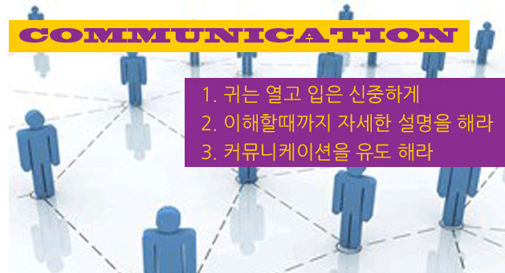

커뮤니케이션의 중요성
프로젝트관리에 가장 중요한 요소 커뮤니케이션
프로젝트를 망치는 요인 중에 하나가 커뮤니케이션이라고 많이 얘기한다.
커뮤니케이션의 단절은 프로젝트의 심근경색과 같다.
현재는 모르지만 언젠가 크게 터지게 되는 손도 못쓸정도로 위험한 단계까지 가게 된다.

그럴때 우리는 커피 한잔의 여유가 필요하다.
그리고 모든 작업자들과의 대화가 필요하다.
예전에 어떤 기획자에게 이런말을 했다.
관리자가 되려면 먼저 귀를 파라 그리고 입은 신중하게.
열린 귀와 심사숙고한 말로 커뮤니케이션을 하는것 그것이 가장 필요한 사람이 관리자(PM)이기 때문이다.
이런면에서는 나도 어려움을 느낀다.
사이트의 근간이 되는 기술적인 제반 업무를 통칭한다.
웹서비스를 하기 위한 모든 기술적인 업무에 대한 분석이 있어야 하고 그 분석을 근간으로 프로젝트관리를 진행 해야 한다.
대국민서비스를 하는 곳에서는 시스템에 대한 관리를 더욱 크게 생각하는곳도 있고 작은 시스템인 경우는 호스팅으로 진행 하는 경우도 있다.
어떠한 경우에라도 안전성이 가장 중요한 부분이 될것이고 그에 대한 적절한 비용배분도 관리 되어야 한다.
또한 서버의 구성현황과 소프트웨어의 구성현황 및 각 담당자들의 연락처까지 관리 되어야 한다.
말을 자르고 내말을 먼저 하는 경우가 더 많았기 때문이다.
언젠가 그런 경우 느끼게 된다.
내가 느꼈던 것처럼 그때의 잘못들을 느끼게 된다.
그럴때 후회하는것보다 지금 준비 하는것이 현명한 방법일것이다.
PM을 위한 커뮤니케이션의 첫번째 방법은 : ' 귀는 열고 입은 신중하게 '
중요한 사항이 발생 할때 회의를 진행 하게 된다.
각 팀별로 주장이 커질때 그 팀들은 선택권을 PM에게 던져준다.
모든 눈들이 PM에게 몰리게 되고 선택을 기다리게 된다.
그럴때 확실한 답변을 해야 한다. PM은 리스크와 프로젝트의 완료를 생각하여 선택을 해야 한다.
그리고 그 선택에 대해서 각 팀/작업자에게 설명을 해야 한다.
왜 이런 결과가 나왔는지를 커뮤니케이션을 해야 한다.
PM을 위한 커뮤니케이션의 두번째 방법은 : ' 이해 할때까지 자세한 설명을 해라 '
커뮤니케이션할때 짧게 얘기 하는것은 상대방에게 호기심을 늦추게 한다.
길게 얘기해서 커뮤니케이션의 장으로 인도를 해야 한다.
어떠한 방법도 좋다 커뮤니케이션의 장으로 인도해라 그가 누가 되었던지 커뮤니케이션을 함으로써 기적을 만나게 될것이다.
그리고 어느정도 인도가 되었을때는 귀를 열어야 한다.
PM을 위한 커뮤니케이션의 세번째 방법은 : ' 커뮤니케이션을 유도 하라 '
관리란 끝이 없다.
어떤일이 발생할지 모르는 상황에서 많은 작업자들과의 커뮤니케이션은 어려운 프로젝트의 활력소가 될것이다.